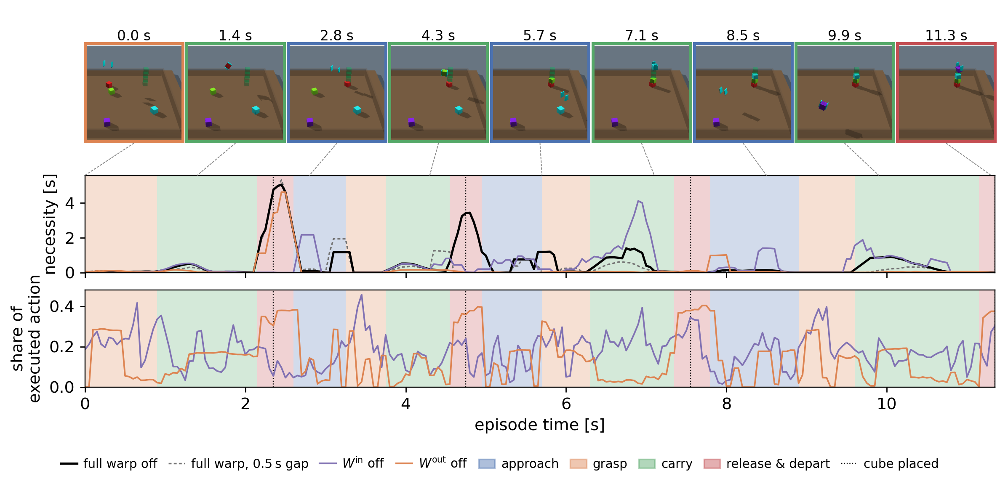

Reinforcement learning policies for robot manipulation degrade when the number of objects \(N\) in the scene grows beyond the training range. This is a covariate shift that also changes the dimension of the state. We propose WAVE (Warping Actions and Views of an Expert), which extends a pretrained single-object skill to many objects without updating its weights.
WAVE has three parts. First, a selection policy picks the one object the robot works on next. Second, a warping policy reads a local view of the scene around that object, whose size does not depend on \(N\). It emits a multiplier and an offset for every quantity the skill reads and every action it outputs. Third, the skill acts under this affine warp. It is shown a scene that holds a single object, while the warp steers it around the objects it is not shown and edits the actions that are sent to the robot. Both the selection and warping policies are trained with PPO on the multi-object reward and use the skill as a black box, so WAVE is task-general and skill-agnostic. It requires only that the skill was trained on the same embodiment and that every object has a goal pose. We also bound the number of attempts needed to place all \(N\) objects, assuming positive expected net progress per attempt, and measure this progress for each object count.
We evaluate WAVE on cube arrangement tasks with a gantry robot and with a Franka Panda arm. Trained with at most nine cubes, it generalizes zero-shot to several times its training count, on the gantry to scenes of up to thirty cubes. Published methods that learn multi-object manipulation show count generalization up to six objects. Fine-tuning the skill, learning from the same local view without it, and an entity transformer, even when distilled from the pretrained skill, all collapse within their training counts under the same training budget. Code, videos and full results are available at https://hhi-robot-learning.github.io/wave-website/.
WAVE takes a skill \(\mu\) that can move a single object to its goal and uses it, without changing its weights, to arrange many objects. A selection policy picks one object \(x^*\) at a time, and \(\mu\) is shown a scene in which this object is the only one. The other objects are still there, so a warping policy \(\psi\) reads the neighborhood of the object and bends the inputs and actions of \(\mu\) where needed, for example to steer the robot around a stack or to let go of a cube on top of another:
The presentation \(\sigma\) shows \(\mu\) only \(x^*\) and its goal, and the crop \(\chi\) is a fixed-width local view around \(x^*\). For every channel \(j\) of \(\mu\)'s input and action, the warp applies \(\tilde z_j = m_j z_j + o_j\): at \(m_j = 1, o_j = 0\) the channel passes through unchanged, and at \(m_j = 0\) the warping policy takes it over. Editing the input makes \(\mu\) itself compute a corrected action; editing the output produces behavior \(\mu\) never learned, such as the release onto a stack.
WAVE generalizes to higher counts for two reasons. First, \(\mu\) can already place a single object, so it is a strong exploration prior and training only learns the corrections needed with many objects. Second, nothing \(\mu\) or the warping policy reads grows with the number of objects: thirty cubes produce the same kind of input as nine.
The selection policy decides which object the frozen skill works on next. It scores every object that is not yet at its goal from the object's position relative to the gripper and to its goal, the robot state, and the object's neighborhood. A shared network maps these features to two numbers per object: a bounded priority \(f_i\) and a feasibility \(\hat p_i\), the probability that an attempt at the object succeeds. The selected object is the one with the highest score
where \(\tilde d_i\) is the distance from the gripper to the object, \(\ell_i\) an estimate of the length of one attempt (the distance from the object to its goal plus a small constant), and \(\alpha\) a fixed price per unit of travel. Since \(1/\hat p_i\) is the expected number of attempts an object takes, the bracket is the expected travel that placing it costs. The holding bonus \(\theta_i\) is nonzero only for the current object, so the policy keeps it until it is placed, and it decides again whenever a cube is placed or a placed cube is knocked off its goal.
The order in which the goals are filled is learned, not scripted. At initialization the priority is 0 and the feasibility 1, so the rule is simply shortest gripper-to-object-to-goal path first. Training with PPO on the task reward moves it away from that rule only where another order earns a higher return. The feasibility is trained on the realized outcomes of past attempts, so an object that cannot be placed yet, for example a cube whose slot in a tower rests on a cube that is not placed, gets a low feasibility and is postponed rather than removed from the candidates. Constraints such as building a tower from the bottom up or a pyramid layer by layer therefore emerge from experience. Because the priority is bounded by \(\beta\), it can reorder objects of similar expected travel but cannot overrule a difference in travel larger than \(2\beta/\alpha\).
Hover over (or tap) a component for details; some link to the related figure or section.
A per-pair network scores every neighbor and an elementwise minimum reduces the scores to one neighborhood encoding, independent of the count. A small transformer emits one categorical distribution per warp parameter over a fixed grid. Every distribution starts on the identity, so training starts from the unwarped skill.
Six cube arrangement tasks, each trained on one to between six and nine cubes and evaluated zero-shot on one to thirty. Every task completes at least 0.98 of its episodes at six cubes. Trained on one to seven cubes, WAVE completes 0.95 of the stacking (\(h=3\)) episodes at twenty cubes and 0.48 at thirty. The line, square, pyramid and wall complete between 0.80 (pyramid) and 0.97 (line and square) at twice their training count, and the line 0.90 at thirty. WAVE stays above the 0.75 that Li et al. report at six objects up to 23 cubes on stacking and up to 30 on the line.
Stacking with \(h=6\) tests placement precision. Its training scenes hold at most seven cubes, one full stack and the base cube of a second, so no training episode places a cube onto a second stack. WAVE still builds the second stack up to five cubes high and completes 0.97 or more of the episodes up to eleven cubes. Success falls to 0.85 at twelve cubes, where the second stack needs its sixth cube, and is zero from 24 cubes on, lost to toppled stacks rather than missed placements.
At high counts, episodes fail mostly by running out of time rather than by losing cubes. At thirty cubes on stacking (\(h=3\)), 0.49 of the episodes end at the time limit of 20 s per cube and 0.06 because a cube left the workspace. With 60 s per cube, success at thirty cubes rises from 0.48 to 0.67 on stacking and from 0.08 to 0.27 on the pyramid.
Stacking (h=3), 15 cubes
Stacking (h=6), 15 cubes
Pyramid, 15 cubes
Wall, 15 cubes
Square, 15 cubes
Line, 15 cubes
One successful episode per task with 15 cubes, beyond every task’s training range of six to nine cubes, in real time from the initial scene until every cube is placed. Goal markers are hidden.
Whole-task success against the number of cubes \(N\). Colored: WAVE per task, mean over three seeds with the range shaded. Gray: published methods on their own tasks, which come from other tasks, simulators and embodiments and are shown for context only. Dashed red: the frozen skill alone on stacking (\(h=3\)). Hover for values, click a legend entry to hide it.
The same method and reward, with a parallel-jaw gripper for stacking, pyramid and wall, and a sphere-tip pusher for the line and square, each embodiment with its own frozen skill. With the pusher, WAVE completes 0.95 of the line episodes at nine cubes, its largest training count, 0.78 at fifteen and 0.62 at twenty, and failed episodes end only a cube or two short (14.2 of fifteen cubes placed on average). The square is harder, 0.60 at nine cubes and 0.10 at fifteen, since its interior slots leave the pusher no free approach side.
With the gripper, success already falls within the training range. Stacking completes 0.75 at six cubes, level with the best published result, and 0.37 at ten, while the pyramid and the wall complete 0.22 and 0.05 at six. The likely cause is the large body of the arm, which knocks neighbors off their goals when cubes are placed next to each other.
Gripper, stacking (h=3), 10 cubes
Gripper, pyramid, 10 cubes
Gripper, wall, 9 cubes
Pusher, line, 10 cubes
Pusher, square, 10 cubes
One successful episode per task, in real time from the initial scene until every cube is placed. Goal markers are hidden.
Whole-task success on the Panda arm for every evaluated count (gripper tasks to 15, pusher line to 20, pusher square to 30).
We deployed a stacking policy trained in simulation on a physical Panda arm, with cube poses tracked from AprilTag fiducials by four calibrated RGB cameras. In ten consecutive runs of a two-tower task, in which three of five cubes have to be moved, all five cubes reached their goals in 8 of 10 runs (95% Wilson interval 49–94%). The two failed runs stopped at a joint limit and at the time limit. Grasps often took several attempts: 68% of the close commands held a cube, and the policy recovered from failed grasps by trying again.
In 5 of the 10 runs the policy also let go of the last cube and both towers stood at the end. The policy never learned this final release, because in training an episode already succeeds when every cube is placed, even with the last cube still in the gripper. A policy fine-tuned for five-cube towers built a five-high tower, which we did not evaluate systematically.
All ten evaluation runs of the two-tower task (5× real time), with the simulated replay of each run inset at the top left.
A policy fine-tuned for five-cube towers building a five-high tower (real time, with sound).
We compare against ten baselines trained on the same gantry, task, reward and training counts, with the same skill wherever one is used. Nine of them fail already within their training counts: they complete at most 0.02 of the episodes with six cubes and none with more, although most of them get a scripted rule that only offers objects whose goal is currently fulfillable, which WAVE does not use. For these nine, the comparison shows that they do not learn the multi-object task with our training budget, and it cannot tell how they would extrapolate if they did.
Only the tenth learns its training counts. It is WAVE with the input edit chosen at the first step and kept for the whole episode, as in the pivoting skills of Zhang et al. (2023). It extrapolates worse: on stacking it completes 0.60 of the episodes at ten cubes and 0.08 at twenty, against 0.98 and 0.95 for WAVE, and on the line 0.55 and 0.35, against 1.00 and 0.93.
| Method | \(\mu\) | Other objects | Selection | line, \(N\) | stacking (h=3), \(N\) | ||||||||
|---|---|---|---|---|---|---|---|---|---|---|---|---|---|
| 1 | 2 | 3 | 6 | 30 | 1 | 2 | 3 | 6 | 30 | ||||
| WAVE | frozen | crop | learned | 1.00 | 1.00 | 1.00 | 1.00 | 0.90 | 1.00 | 1.00 | 1.00 | 1.00 | 0.48 |
| input edit fixed per episode | frozen | crop | learned | 1.00 | 0.93 | 0.98 | 0.75 | 0.25 | 1.00 | 0.98 | 1.00 | 0.90 | 0.00 |
| skill alone | frozen | none | scripted | 0.79 | 0.35 | 0.00 | 0.00 | 0.00 | 0.97 | 0.17 | 0.00 | 0.00 | 0.00 |
| fine-tuning \(\mu\) | fine-tuned | none | scripted | 0.72 | 0.43 | 0.13 | 0.02 | 0.00 | 0.88 | 0.42 | 0.02 | 0.00 | 0.00 |
| fine-tuning \(\mu\) on the crop, \(\omega=0\) | fine-tuned | crop | scripted | 0.00 | 0.00 | 0.00 | 0.00 | 0.00 | 0.00 | 0.00 | 0.00 | 0.00 | 0.00 |
| fine-tuning \(\mu\) on the crop, \(\omega=1\) | fine-tuned | crop | scripted | 0.96 | 0.43 | 0.03 | 0.00 | 0.00 | 0.98 | 0.64 | 0.03 | 0.00 | 0.00 |
| JSRL (Uchendu et al., 2023) | guide, then fine-tuned | none | scripted | 0.45 | 0.13 | 0.03 | 0.00 | 0.00 | 0.87 | 0.45 | 0.03 | 0.00 | 0.00 |
| HRL subgoals | frozen | crop | learned | 0.54 | 0.18 | 0.00 | 0.00 | 0.00 | 0.83 | 0.53 | 0.10 | 0.00 | 0.00 |
| TD7 on the crop | – | crop | scripted | 0.00 | 0.00 | 0.00 | 0.00 | 0.00 | 0.00 | 0.00 | 0.00 | 0.00 | 0.00 |
| EIT (Haramati et al., 2024) | – | all | – | 0.20 | 0.00 | 0.00 | 0.00 | 0.00 | 0.53 | 0.00 | 0.00 | 0.00 | 0.00 |
| EIT distilled from \(\mu\) | distilled | all | – | 0.82 | 0.56 | 0.37 | 0.00 | 0.00 | 0.94 | 0.20 | 0.00 | 0.00 | 0.00 |
Whole-task success of WAVE and all ten baselines, mean over three seeds. The columns give how each method uses the skill \(\mu\), which objects besides the selected one it sees, and how it picks the next object; a scripted selection only offers objects whose goal is currently fulfillable. Bold marks the highest mean per count. Every seed of every baseline except the fixed input edit is at 0.00 at thirty cubes and at most 0.05 at six. The chart shows every count from one to thirty, with the seed range shaded.
On stacking and the square, warping only the input channels nearly matches the full warp, warping only the output channels collapses by ten cubes, and warps with only multipliers or only offsets fall in between. On the pyramid, where cubes rest on each other and the release itself has to change, neither side alone is enough. Random selection completes no episode with five or more cubes on stacking and the pyramid, while a fixed nearest-first rule matches the learned selection policy on stacking and the square and falls behind it on the pyramid.
We split each episode into the phases approach, grasp, carry, release and depart, read from the simulator state. At every step we copy the simulator and continue the copies with one of four changes, six copies for each: the full warp, only \(W_{\mathrm{in}}\) or only \(W_{\mathrm{out}}\) is held at the identity, or the full warp pauses for 0.5 s.
Necessity of a change is the extra time the current phase then takes, compared with six unchanged copies. A copy that does not finish the phase within 6 s, or knocks over a placed cube, counts as 6 s.
Contribution of each side measures how much it changes the executed action. From the same state we compute the skill action \(a_\mu\), the action \(a_{\mathrm{in}}\) under the input warp only, the action \(a_{\mathrm{out}}\) under the output warp only, and the executed action \(a\) under both. The two-player Shapley value splits \(a - a_\mu\) exactly between the two sides,
and the contribution of a side is \(\lVert \Delta \rVert\) relative to the diagonal \(2\sqrt{d_a}\) of the action range \([-1, 1]^{d_a}\). This is the share of the executed action each side accounts for, plotted at the bottom of the figure: 0% means the side leaves the skill's action unchanged, and 100% would be a change across the full action range.
Over 32 held-out episodes with four cubes, a phase takes about a second. Switching off the output warp costs 1.05 s in release and depart, but only 0.27–0.34 s in the other phases, since the frozen skill is a grasp-and-hold policy that never releases a cube on its own. Switching off the input warp costs 0.95–1.56 s in every phase, because it steers the skill throughout the episode.
In the episode below, \(W_{\mathrm{in}}\) accounts for 20–40% of the executed action throughout, but its necessity stays low during approach and carry, where the skill's own feedback absorbs a short gap. At the releases the necessity rises, and it comes almost entirely from \(W_{\mathrm{out}}\): the skill is a grasp-and-hold policy and never lets go, so \(W_{\mathrm{out}}\) overrides its action to release the cube. The output side thus adds a missing behavior at a few critical moments, and the input side steers the skill continuously.

One cube stacking episode with \(h=6\), four cubes in one stack. Top, scene views framed in the color of the manipulation phase. Middle, necessity: the extra time the current phase takes when the full warp (black), only \(W_{\mathrm{in}}\) (purple) or only \(W_{\mathrm{out}}\) (orange) is held at the identity, or the full warp pauses for 0.5 s (dashed gray). Bottom, contribution: the share of the executed action that each side accounts for.
Each experiment changes one part of the setup above and keeps the frozen skill, trained on a single 16 cm cube. Unless noted, the policies are the gantry policies above; "continued" means they were trained further on scenes with one to ten objects. Whole-task success, mean over three seeds.
| Experiment | What changes | Result |
|---|---|---|
| One pair of policies for five tasks | One warping and one selection policy trained on the line, square, wall, pyramid and stacking (\(h=4\)) at once, one to ten cubes | At least 0.90 on every task up to ten cubes. At thirty cubes 1.00 on the line and 0.93 on the square; at twenty 0.95 on stacking, 0.75 on the wall and 0.35 on the pyramid. |
| Larger cubes | Every cube 1.2 times the edge (19.2 cm), five tasks, continued | 0.93 at ten cubes and 0.77 at twenty. |
| Smaller cubes | Every cube 0.8 times the edge (12.8 cm), five tasks, continued | 0.53 at ten cubes and 0.16 at twenty. The drop starts within the training counts. |
| Boxes and mixed objects | Boxes of 16×24×16 cm, cubes of three sizes in one scene, or cubes and boxes in one scene; line and square, continued | 0.99, 0.97 and 0.99 at twenty objects. |
| Cubes that have to stay in place | Half of the cubes have their start pose as the goal; line and square, continued | 0.98 at twenty cubes. |
| Disturbances | Every 10 s or 20 s a cube is moved to a free spot on the floor; no retraining, 40 s per cube | At most 0.10 below the undisturbed episodes, e.g. 0.88 against 0.98 on the line with twenty cubes and a disturbance every 10 s. |
| Starting from a built structure | All cubes start as a pyramid with the square as goal, or as stacks with the line as goal; continued | 0.30 and 0.90 at fifteen cubes, reached by knocking the structure down. When a falling cube ends the episode as a failure: 0.92 and 0.82 at three cubes, 0.00 and 0.40 at fifteen. |
| Stricter success | No retraining. Every cube placed for 2 s without interruption (50 s per cube), or still placed 2 s after a scripted release | Stacking (\(h=3\)) at twenty cubes: 0.92 held for 2 s against 0.94 first success, and 0.73 after the release against 0.81 whole-task success. |
| Mean or attention instead of the minimum | The minimum over the other objects in the warping policy replaced by a mean or an attention-weighted mean; retrained | Mean success beyond the training counts with minimum, mean and attention: 0.82, 0.55 and 0.64 on stacking (\(h=3\)), 0.47, 0.47 and 0.66 on the pyramid. |
What does the warp actually do during an episode? Pick a task and one of its recorded episodes: every task of the paper, on the gantry and on the Panda arm with its gripper or its pusher. The bars show how far the warping policy moves away from leaving each quantity unchanged at the current decision, as a KL divergence in bits: on the input side, what the frozen skill is shown; on the output side, what the robot is told to do. The action panel compares the skill's own action with the one actually executed.
Three successful episodes per task, drawn at random among the successful ones of 32 parallel worlds (128 for the Panda wall), each running one episode with the paper's policy. Gantry tasks run with 15 cubes, the Panda gripper tasks with 7 (stacking) and 6 cubes (pyramid, wall), and the pusher tasks with 10 cubes. A value of 0 bits means the policy is certain to pass that quantity through unchanged.
@article{mattes2026wave,
author = {Mattes, Paul and Abdeldayem, Ayman and Shcherba, Denis and Samek, Wojciech and Toussaint, Marc},
title = {Object Count Generalization Is an Interface Problem: Warping a Frozen Skill Instead of Retraining It},
journal = {arXiv preprint arXiv:2611.30765},
year = {2026},
}